Boss（Veltharis）快斬連段：兩段單手快斬
還沒接進遊戲。右手單手握劍：第一刀從右到左橫掃、第二刀從左到右橫掃。單手揮沒有左手牽制，整個身體跟著轉（髖、腿、肩、頭），空著的左手跟著甩，重心跟著踏出去的右腳走。四個方向：朝下、朝右、朝上、朝左（朝左不是鏡像）。刀光、劍身符文由程式畫，這裡沒有。
關鍵姿勢（四個方向，2 倍）
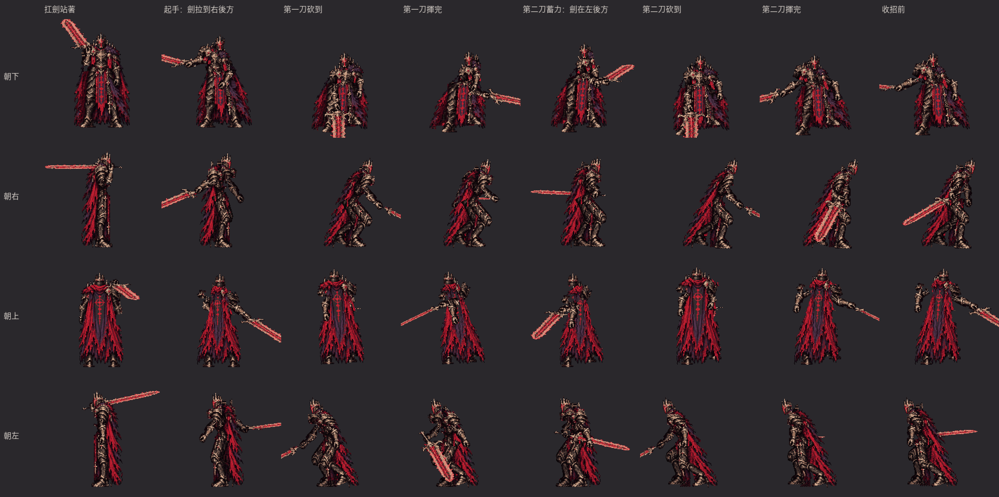
從精靈圖直接切出來的
揮劍逐張（2 倍）
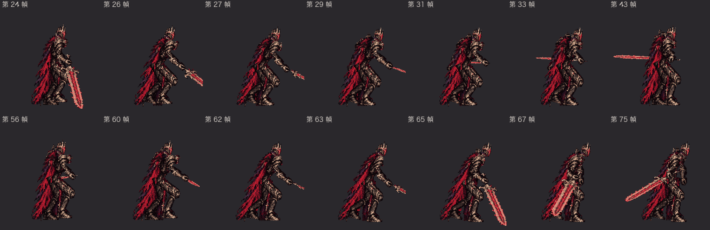
朝右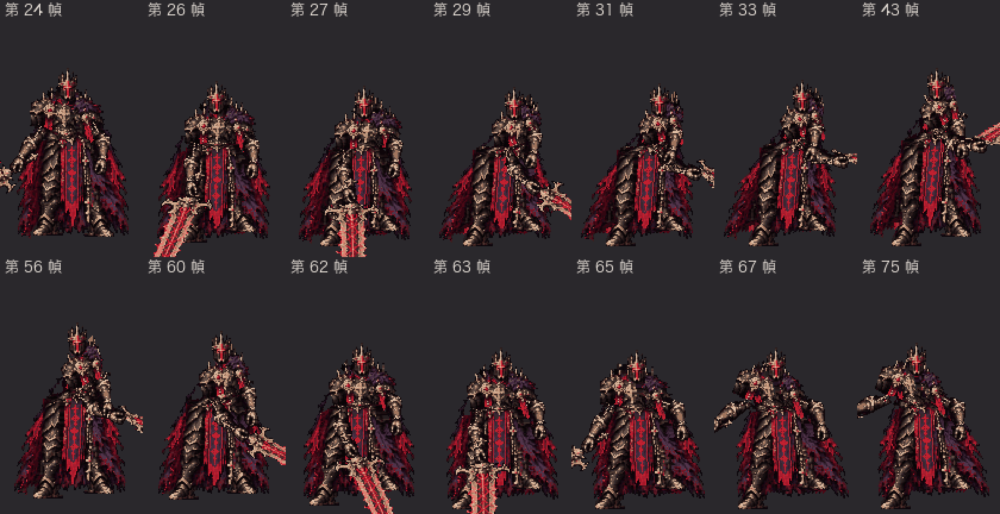
朝下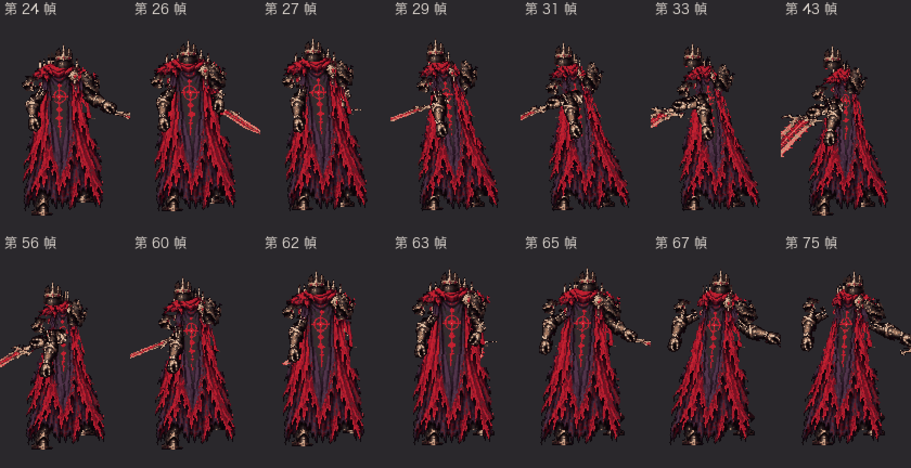
朝上
遊戲裡會看到的順序
快斬連段（二連，一階段）：扛劍站著 → 起手 0.4 秒 → 第一刀（0.1 秒）→ 0.6 秒後第二刀（0.1 秒）→ 收招 0.9 秒 → 扛劍站著
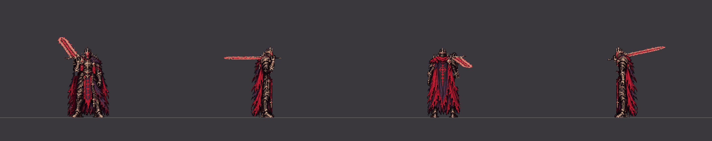
四個方向（2 倍）
朝下（60fps，3 倍）朝右（60fps，3 倍）朝上（60fps，3 倍）朝左（60fps，3 倍）快斬連段（二階段：收招縮短成 0.675 秒，同一組圖）
四個方向（2 倍）
朝下（60fps，3 倍）朝右（60fps，3 倍）朝上（60fps，3 倍）朝左（60fps，3 倍）往前走時出招（從走路循環第 10 張直接接快斬）
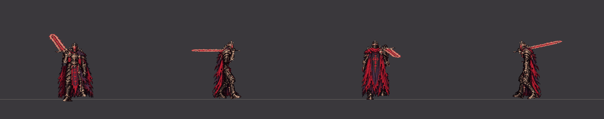
四個方向（2 倍）
朝下（60fps，3 倍）朝右（60fps，3 倍）朝上（60fps，3 倍）朝左（60fps，3 倍）側移時出招（從往右側移的循環第 5 張直接接快斬）
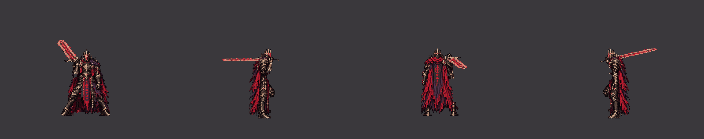
四個方向（2 倍）
朝下（60fps，3 倍）朝右（60fps，3 倍）朝上（60fps，3 倍）朝左（60fps，3 倍）第二刀在砍到的那一刻被完美彈返：被彈開 0.8 秒 → 扛劍站著
四個方向（2 倍）
朝下（60fps，3 倍）朝右（60fps，3 倍）朝上（60fps，3 倍）朝左（60fps，3 倍）
握劍的手（放大 4 倍）
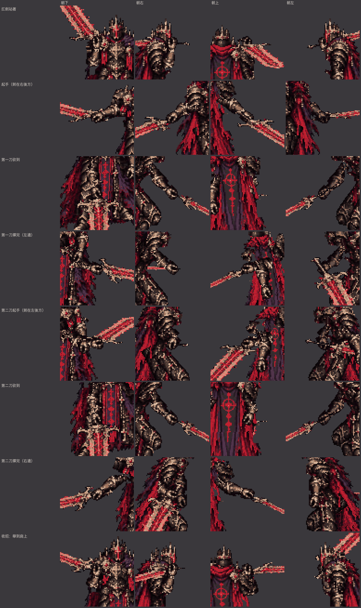
扛劍站著、起手（劍在右後方）、第一刀砍到、第一刀揮完（左邊）、第二刀起手（劍在左後方）、第二刀砍到、第二刀揮完（右邊）、收招：舉到肩上
側面的腿（只畫腿，綠線＝靠鏡頭的右腿，藍線＝左腿；每一張）
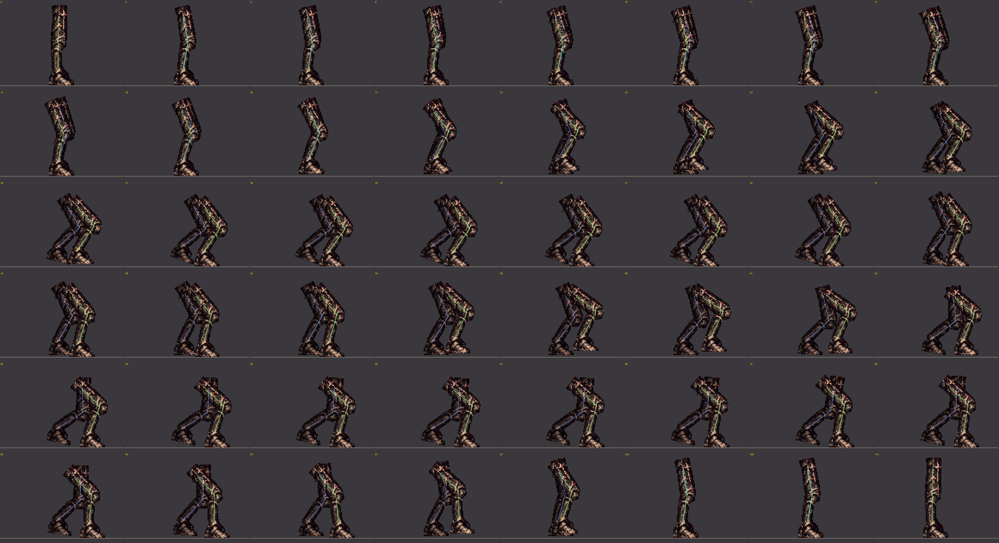
快斬連段（每一張，左上角是第幾個戰鬥幀）
逐張
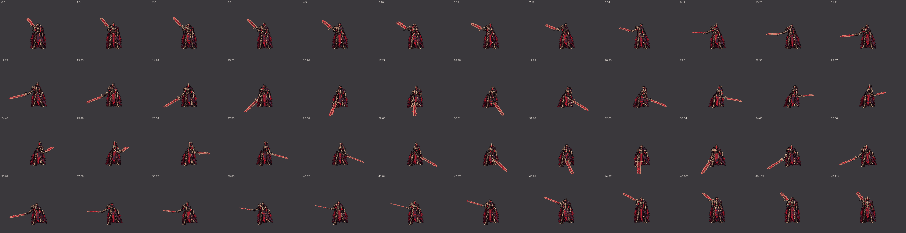
快斬連段（單手：第一刀從右到左、第二刀從左到右） 朝下（第幾張：從出招開始的第幾個戰鬥幀）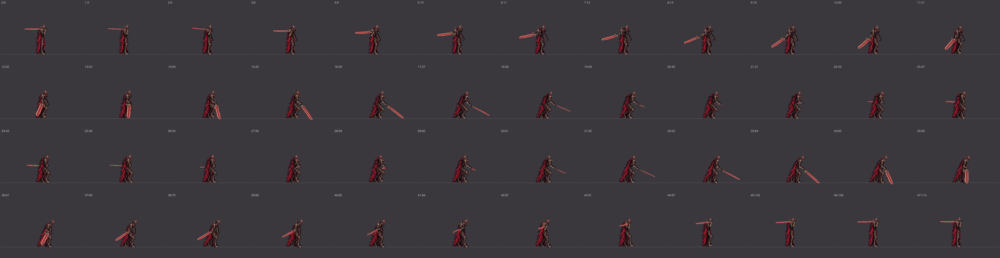
快斬連段（單手：第一刀從右到左、第二刀從左到右） 朝右（第幾張：從出招開始的第幾個戰鬥幀）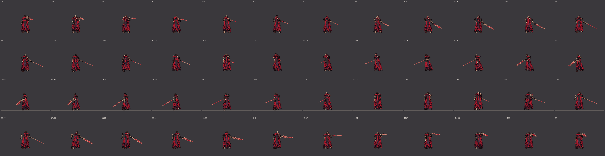
快斬連段（單手：第一刀從右到左、第二刀從左到右） 朝上（第幾張：從出招開始的第幾個戰鬥幀）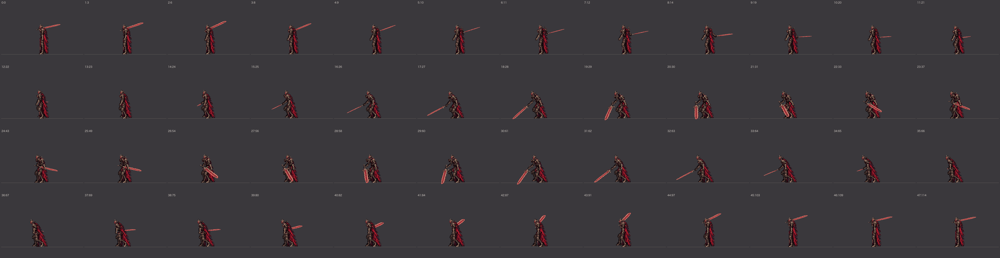
快斬連段（單手：第一刀從右到左、第二刀從左到右） 朝左（第幾張：從出招開始的第幾個戰鬥幀）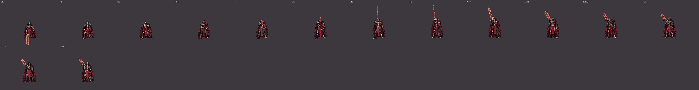
快斬第二刀被彈開 朝下（第幾張：從出招開始的第幾個戰鬥幀）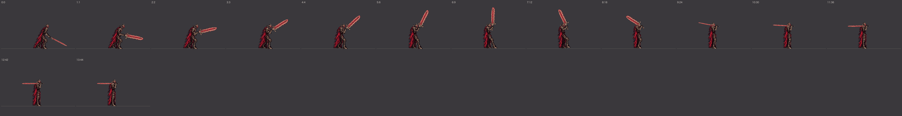
快斬第二刀被彈開 朝右（第幾張：從出招開始的第幾個戰鬥幀）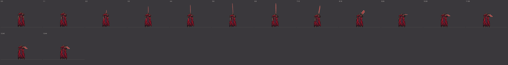
快斬第二刀被彈開 朝上（第幾張：從出招開始的第幾個戰鬥幀）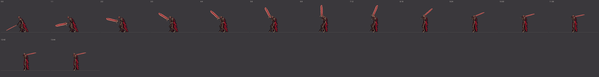
快斬第二刀被彈開 朝左（第幾張：從出招開始的第幾個戰鬥幀）